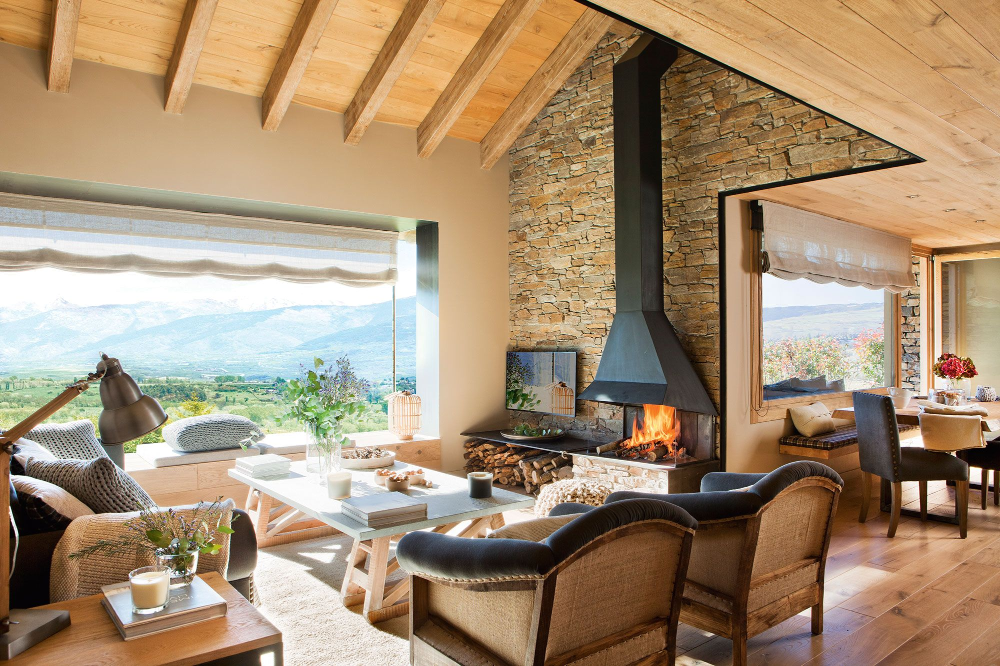
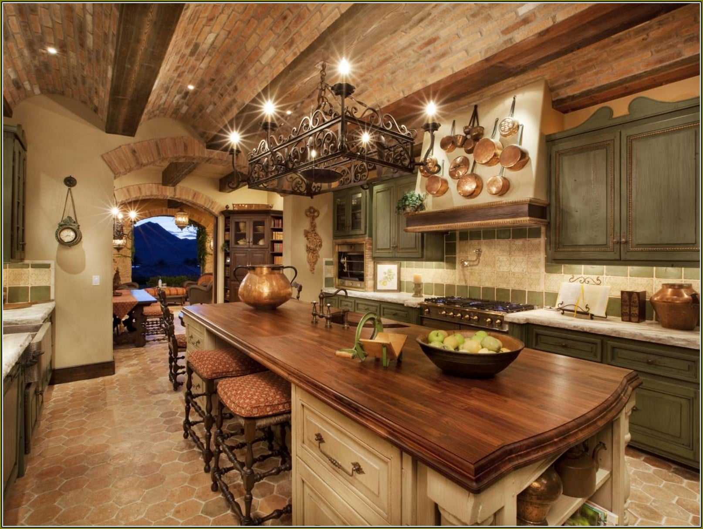

<!DOCTYPE html>
<html lang="en">

<head>
    <meta charset="UTF-8">
    <meta name="viewport" content="width=device-width, initial-scale=1.0">
    <title>Rincones | Diseño de interiores </title>
    <link rel="icon" href="../img/favicon (2).ico" type="imgage/x-icon">
    <link href="https://cdn.jsdelivr.net/npm/bootstrap@5.3.3/dist/css/bootstrap.min.css" rel="stylesheet"
        integrity="sha384-QWTKZyjpPEjISv5WaRU9OFeRpok6YctnYmDr5pNlyT2bRjXh0JMhjY6hW+ALEwIH" crossorigin="anonymous">
    <link rel="stylesheet" href="../css/EstiloRustico.css">
    <meta name="description"
        content="Espacios inspiradores y funcionales se fusionan en nuestros diseños de interiores, creando ambientes personalizados que reflejan la esencia única de cada cliente. Innovación estética y atención meticulosa a los detalles son nuestro sello distintivo. Bienvenidos a nuestro mundo de diseño cautivador.">
    <meta name="keywords" content="Living, Cocina, Baño, Moderno, Conteporaneo, Rustico, Escandinavo">
    <meta property="og:type" content="website">
    <meta property="og:title" content="Ricones | Diseño de interiores ">
    <meta property="og:url" content=".">
    <meta property="og:img" content=".">
</head>
<script src="https://cdn.jsdelivr.net/npm/bootstrap@5.3.3/dist/js/bootstrap.bundle.min.js"
    integrity="sha384-YvpcrYf0tY3lHB60NNkmXc5s9fDVZLESaAA55NDzOxhy9GkcIdslK1eN7N6jIeHz" crossorigin="anonymous">
    </script>

</html>
<header>
    <div class="container text-center">
        <div class="row">
            <div class="col">
                
            </div>
        </div>
    </div>
</header>
<scetion class="nav">
    <div class="row">
        <div class="col">
            <li>
                <button type="button" class="btn btn-outline-light" href="../index.html"><a href="../index.html">Inicio</a></button>
            </li>
        </div>
        <div class="col">
            <li>
                <button type="button" class="btn btn-outline-light"><a href="#Nosotros">Nosotros</a></button>
            </li>
        </div>
        <div class="col">
            <li>
                <button type="button" class="btn btn-outline-light"><a href="#">Contacto</a></button>
            </li>
        </div>
    </div>
</scetion>
<section class="intro">
    <div class="intro-h1">
        <h1>Estilo Rustico</h1>
    </div>
    <div class="intro-txt">
        <p>El estilo rústico es un estilo de diseño de interiores que se inspira en la naturaleza y evoca una sensación de calidez y confort. Se caracteriza por la utilización de materiales naturales como la madera, la piedra y el hierro forjado. Los colores utilizados son cálidos y terrosos, como el marrón, el beige y el verde oliva. Se valoran las texturas rústicas, como paredes de piedra o ladrillo expuesto, suelos de madera envejecida y tejidos rugosos. El mobiliario es robusto y resistente, preferentemente de madera maciza con acabados envejecidos. La iluminación es cálida y acogedora, utilizando lámparas de pie o de mesa con bases de madera o hierro forjado. Se incorporan elementos naturales en la decoración, como plantas en macetas de barro y objetos decorativos como ramas secas o piedras. En resumen, el estilo rústico busca crear un ambiente acogedor y lleno de encanto, utilizando materiales naturales, colores cálidos y detalles rústicos que evocan la sensación de una casa de campo tradicional.</p>
    </div>
</section>
<center>
    <hr width="80%" size="4" color="black">
</center>
<h1>
    Caracteristicas generales
</h1>
<section class="general">
    <div class="info">
        <div class="info-txt">
            <li>1. Materiales naturales: En un diseño rústico, se utilizan principalmente materiales naturales como la madera, la piedra y el hierro forjado. Estos materiales aportan calidez y textura al espacio, creando una sensación de rusticidad.
            </li>
            <li>2. Colores cálidos y terrosos: Los colores utilizados en un diseño rústico suelen ser cálidos y terrosos, como tonos de marrón, beige, verde oliva y terracota. Estos colores evocan la naturaleza y complementan los materiales naturales utilizados.

            </li>
            <li>3. Detalles artesanales: Los detalles artesanales son una parte importante del diseño rústico. Se pueden incluir elementos como muebles tallados a mano, cerámicas hechas a mano, tejidos rústicos y objetos decorativos con detalles intrincados. Estos detalles añaden un toque de autenticidad y calidez al espacio.
            </li>
            <li>4. Texturas rústicas: En un diseño rústico, las texturas desempeñan un papel crucial. Se pueden utilizar paredes de piedra o ladrillo expuesto, vigas de madera a la vista, suelos de madera envejecida o con aspecto desgastado, y tejidos rugosos como el lino o la lana. Estas texturas aportan carácter y rusticidad al ambiente.
            </li>
        </div>
        <div class="info-img">
            <div id="carouselExampleSlidesOnly" class="carousel slide" data-bs-ride="carousel">
                <div class="carousel-inner">
                    <div class="carousel-item active">
                        
                    </div>
                    <div class="carousel-item">
                        
                    </div>
                    <div class="carousel-item">
                        
                    </div>
                </div>
            </div>
        </div>
    </div>
</section>
<section class="general">
    <div class="info">
        <div class="info-img">
            <div id="carouselExampleSlidesOnly" class="carousel slide" data-bs-ride="carousel">
                <div class="carousel-inner">
                    <div class="carousel-item active">
                        
                    </div>
                    <div class="carousel-item">
                        
                    </div>
                    <div class="carousel-item">
                        
                    </div>
                </div>
            </div>
        </div>
            <div class="info-txt">
                <li>5. Mobiliario robusto: El mobiliario en un diseño rústico suele ser robusto y resistente. Se prefieren los muebles de madera maciza con acabados envejecidos o rústicos. Los sofás y las sillas suelen tener tapicería de tela en tonos naturales o estampados con motivos campestres.
                </li>
                <li>6. Iluminación acogedora: La iluminación en un diseño rústico es cálida y acogedora. Se pueden utilizar lámparas de pie o de mesa con bases de madera o hierro forjado, lámparas colgantes con pantallas de tela o cristal opaco, y velas para crear un ambiente íntimo y relajado.
                </li>
                <li>7. Elementos de la naturaleza: Para realzar el estilo rústico, se pueden incorporar elementos de la naturaleza en la decoración. Esto puede incluir plantas en macetas de barro, ramas secas como decoración de pared, piedras o conchas marinas como elementos decorativos, y cuadros o fotografías de paisajes naturales.

                </li>
            </div>
        </div>
    </div>
</section>
<section class="servicio">
    <h1>
        Servicios
    </h1>
    <div class="servicio-info">
        <div class="servicio-info-li">
            <li>Remodelacion guiado po un estilo moderno</li>
            <li>Incluye un render 3D</li>
            <li>Servicio de calidad</li>
            <li>Tiempo: 1-2 semanas</li>
            <li> 1700 USD$</li>
        </div>
        <div>

        </div>
    </div>
</section>
<section class="form-txt">
    <h1>
        Comprar
    </h1>
</section>
<section class="form">
    <form class="row g-3">
        <div class="col-md-6">
            <label for="inputEmail4" class="form-label">Email</label>
            <input type="email" class="form-control" id="inputEmail4">
        </div>
        <div class="col-md-6">
            <label for="inputPassword4" class="form-label">Password</label>
            <input type="password" class="form-control" id="inputPassword4">
        </div>
        <div class="col-12">
            <label for="inputAddress" class="form-label">Numero de telefono</label>
            <input type="text" class="form-control" id="inputAddress" placeholder="--">
        </div>
        <div class="col-md-6">
            <label for="inputCity" class="form-label">City</label>
            <input type="text" class="form-control" id="inputCity">
        </div>
        <div class="col-12">
            <div class="form-check">
                <input class="form-check-input" type="checkbox" id="gridCheck">
                <label class="form-check-label" for="gridCheck">
                    Check me out
                </label>
            </div>
        </div>
        <center>
            <div class="col-12">
                <button type="submit" class="btn btn-primary">Comprar</button>
            </div>
        </center>
    </form>
</section>